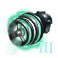

Guardians
Guardians (also called Leviathans) are extremely powerful spaceborne aliens added in various DLCs. They can be found in special predetermined systems and rival moons in size and mass. They are marked with a skull icon both in the fleet power box and on the galactic map, and the exact strength number can only be seen with debug mode on. Each guardian has a unique event chain. While one can just stumble over a guardian during exploration, they can also be found with the help of the Curator Enclave, who will also provide backstory and damage buffs for them once they are encountered. Guardians have an immense amount of health and should only be engaged mid-late game. Defeating most guardians starts a Leviathan Parade Opportunity situation.
Guardians get various bonuses to make them stronger based on the game difficulty. AI empires only attack a guardian if their fleet power is at least 40k.
If a guardian spawns next to a Fallen Empire, the Fallen Empire typically sends a fleet and defeats the guardian. Most rewards from defeating the guardian, such as relics or the Parade Opportunity are lost if this happens.
Opus Sentinel

The Opus Sentinel will be present in every game if any empire has the  Hard Reset origin, guarding a system containing a size 25
Hard Reset origin, guarding a system containing a size 25  Machine World located a few hyperlane jumps from the empire's capital. It uses regular ship components and can be countered appropriately.
Machine World located a few hyperlane jumps from the empire's capital. It uses regular ship components and can be countered appropriately.
| Section | Components |
|---|---|
| Core |        
|
| Weapons |          
|
| Utility |       
|
Defeating the Opus Sentinel gives the planet the  Machine Hulk blocker. Regardless of which empire defeated the guardian, the empire with the
Machine Hulk blocker. Regardless of which empire defeated the guardian, the empire with the  Hard Reset will be given a special project in the system that requires a science ship and takes a year to complete. After every quarter of progress a narrative event will describe more of the history of the Opus Accumulator. Finishing the special project brings an option to terraform the planet to a
Hard Reset will be given a special project in the system that requires a science ship and takes a year to complete. After every quarter of progress a narrative event will describe more of the history of the Opus Accumulator. Finishing the special project brings an option to terraform the planet to a  Gaia World with a
Gaia World with a  Bubbling Swamp,
Bubbling Swamp,  Crystalline Caverns and
Crystalline Caverns and  Dust Desert planetary feature.
Dust Desert planetary feature.
Asteroid Hives

|
|
Available only with the Leviathans DLC enabled. |
A random system may have an asteroid belt containing 5 unique crystalline asteroids with deposits of  6-8 minerals and 6 unselectable asteroids with one of them producing a chirping-like sound. Entering the system for the first time displays an event window hinting that there is more to the system than meets the eye.
6-8 minerals and 6 unselectable asteroids with one of them producing a chirping-like sound. Entering the system for the first time displays an event window hinting that there is more to the system than meets the eye.
If a mining station is built in the system, the Asteroid Hives awaken with the following MTTH based on the number of constructed mining stations:
| Mining Stations | 1 | 2 | 3 | 4 | 5 |
|---|---|---|---|---|---|
| MTTH | 33.3 years | 11.1 years | 3.7 years | 1.2 years | 0.4 years |
The Asteroid Hives use only strike craft as their weapons. As a result, carrier ships are the ideal counters, as the Asteroid Hives have no point-defense themselves and launched strike craft engage and destroy the enemy ones before attacking the hives. In addition, carrier ships can mount point-defense weapons.
Defeating all 6 Asteroid Hives grants  500 energy and
500 energy and  2000 society research in addition to allowing the system to be safely mined.
2000 society research in addition to allowing the system to be safely mined.
The conflict can be entirely avoided by using habitat orbitals to mine the system instead of mining stations.
Empires that have the  Void Hive civic will detect the hives when entering the system and offer a special project that requires
Void Hive civic will detect the hives when entering the system and offer a special project that requires  2000 society research and a science ship above one of the crystalline asteroids. Completing it awakens the hives and pacifies them towards the empire.
2000 society research and a science ship above one of the crystalline asteroids. Completing it awakens the hives and pacifies them towards the empire.
Automated Dreadnought
|
|
Available only with the Leviathans DLC enabled. |
A random system with two habitable worlds may be defended by the Automated Dreadnought, an ancient warship of old locked in patrol mode. The Automated Dreadnought uses regular ship components and can be countered appropriately.
| Section | Components |
|---|---|
| Core |   
|
| Weapons |
|
| Utility |  
|
Defeating the Automated Dreadnought gives the following three choices:
- Salvage the dreadnought for
 5000 energy and
5000 energy and  1000 alloys and
1000 alloys and  30x monthly Engineering output (1000 ~ 5000) Engineering research.
30x monthly Engineering output (1000 ~ 5000) Engineering research. - Issue a special project to repair and use it that costs 50000 Engineering research. The repaired Dreadnought is the same as listed above but it loses any guardian bonuses from game difficulty. Its
 Jump Drive will be upgraded to a
Jump Drive will be upgraded to a  Psi Jump Drive if the empire has the technology. This option awards the
Psi Jump Drive if the empire has the technology. This option awards the  Dreadnought achievement.
Dreadnought achievement.  If the The Machine Age DLC is enabled, can choose to unlock the
If the The Machine Age DLC is enabled, can choose to unlock the  Ancient Dreadnought trait and the
Ancient Dreadnought trait and the  Leviathan Tech Genesis technology if the empire has either of the following:
Leviathan Tech Genesis technology if the empire has either of the following:
 Machine or
Machine or  Mechanical founder species
Mechanical founder species Integrated Anatomy tradition
Integrated Anatomy tradition Artificial Administration,
Artificial Administration,  Binary Motivators, or
Binary Motivators, or  Quantum Neuro-Links technology
Quantum Neuro-Links technology
Defeating the guardian also starts the Automated Dreadnought Leviathan Parade Situation regardless of choice.
Enigmatic Fortress

|
|
Available only with the Leviathans DLC enabled. |
A random system with a class A star may house the Enigmatic Fortress, a massive space station guarded by numerous unique defense platforms. The Enigmatic Fortress uses regular components and can be countered appropriately. The installation consists of the following stations:
| 1 Ancient Vault | 2 Ancient Guardian | 2 Ancient Warden | 4 Ancient Defender | 8 Ancient Sentinel |
|---|---|---|---|---|
|
|
|
|
|
|


Defeating the Enigmatic Fortress starts a lengthy event chain that must be completed to gain its rewards. Letting the timer expire at any point results in the Fortress repowering, thus requiring it to be defeated again.  If the The Machine Age DLC is enabled, empires with a
If the The Machine Age DLC is enabled, empires with a  Machine or
Machine or  Mechanical founder species or the
Mechanical founder species or the  Integrated Anatomy tradition as well as
Integrated Anatomy tradition as well as  Artificial Administration,
Artificial Administration,  Binary Motivators or
Binary Motivators or Quantum Neuro-Links can skip the event chain to instead unlock the
Quantum Neuro-Links can skip the event chain to instead unlock the  Enigmatic Fortress trait and the
Enigmatic Fortress trait and the  Leviathan Tech Genesis technology if not already unlocked.
Leviathan Tech Genesis technology if not already unlocked.
| No. | Choice | Outcome |
|---|---|---|
| 1 | Demolitions Team (1 army transport) | Expedition proceeds but the army is lost |
| Local Power Surge – Go with the higher estimate ( |
Vault repowers | |
| Local Power Surge – Go with the lower estimate ( |
Expedition proceeds | |
| 2 | Place metal rings around the remaining two poles | Vault repowers |
| Search for torus-shaped indentations on the bulkhead | Vault repowers | |
| Rearrange the metal tori on the poles | Expedition proceeds | |
| Remove center and rightmost poles from the pedestal | Vault repowers | |
| 3 | Home System Research – The beginning | Vault repowers |
| Home System Research – The middle | Event success | |
| Home System Research – The end | Vault repowers | |
| Supply Dark Matter ( |
Event success | |
| Use Force (1 military ship) | Event failed – The vault and all ships in the system are destroyed, every habitable planet is turned into a | |
| Black Hole Research (special project) | Event success |
Successfully investigating the Enigmatic Fortress grants  1000-5000 Research across all fields, unlocks the
1000-5000 Research across all fields, unlocks the  Enigmatic Encoder and
Enigmatic Encoder and  Enigmatic Decoder technologies and awards the
Enigmatic Decoder technologies and awards the  Unravelling Enigma achievement.
Unravelling Enigma achievement.
Infinity Sphere

|
|
Available only with the Leviathans DLC enabled. |
The black hole system named Gargantua houses the Infinity Sphere (also called Infinity Machine), the only guardian in the game that is not hostile. At first no interaction with the Infinity Sphere is possible, but a year or two after being discovered the guardian sends a transmission and starts a special project that requires 360 days and at least a level 3 scientist leader to be finished. Completing the special project allows the following options:
- Materialist empires can attempt to hack the Infinity Sphere. The chance of success is 50% and permanently grants a
 +5% research output empire modifier as well as either the
+5% research output empire modifier as well as either the  Positronic AI or the
Positronic AI or the  Zero Point Power technology on a success. If both were already researched, it grants
Zero Point Power technology on a success. If both were already researched, it grants  1000-5000 Society research. For
1000-5000 Society research. For  Gestalt Consciousness empires, this is the only option. This approach destroys the Infinity Sphere.
Gestalt Consciousness empires, this is the only option. This approach destroys the Infinity Sphere. - Spiritualist empires can declare the Infinity Sphere a divine object, granting a
 +5% Happiness empire modifier.
+5% Happiness empire modifier. - Militarist empires can destroy the Infinity Sphere with an army without fighting it to gain the same bonuses as when defeating it.
- All empires can communicate with the Infinity Sphere after the special project is completed. Militarist and
 Fanatic Egalitarian empires can tell it the liar's paradox but the guardian merely finds paradoxes boring. The empire can offer to help it and start a special project that requires 1800 days and a science vessel to be finished. Finishing the project has one of the following outcomes.
Fanatic Egalitarian empires can tell it the liar's paradox but the guardian merely finds paradoxes boring. The empire can offer to help it and start a special project that requires 1800 days and a science vessel to be finished. Finishing the project has one of the following outcomes.
- 50%: The project fails but the Infinity Sphere rewards the empire with the Positronic AI technology. If already researched, it grants the Zero Point Power technology. If both were researched, it grants the empire a +5% research output empire modifier.
- 25%: the project succeeds and the Infinity Sphere enters the black hole. It grants the Positronic AI technology. If already researched, it grants the Zero Point Power technology. If both were researched, it grants
 150 Influence. In addition, the black hole gains a 4 Research deposit.
150 Influence. In addition, the black hole gains a 4 Research deposit. - 25%: the project succeeds and the Infinity Sphere enters the black hole and shrinks it to a smaller size renamed Pantagruel, which gains a 10 Research deposit. The empire gains 200 Influence and permanently gains the Mirror of Knowledge modifier (
 +10% Research Speed). In addition, a Curator Enclave can be contacted and given some info for 500 Engineering Research. This outcome awards the
+10% Research Speed). In addition, a Curator Enclave can be contacted and given some info for 500 Engineering Research. This outcome awards the  Infinite Creation achievement.
Infinite Creation achievement.
- 50%: The project fails but the Infinity Sphere rewards the empire with the
Alternatively, the Infinity Sphere can be attacked, forcing it to open and become aggressive. Destroying the Infinity Sphere allows it to be broken down for  700-30000 Minerals and
700-30000 Minerals and  250-500 Influence. Alternatively, empires that are not
250-500 Influence. Alternatively, empires that are not  Gestalt Consciousness can study its nature to permanently unlock the next tier of
Gestalt Consciousness can study its nature to permanently unlock the next tier of  Mechanical pop research. Destroying the Infinity Sphere removes any empire modifier.
Mechanical pop research. Destroying the Infinity Sphere removes any empire modifier.
 If the The Machine Age DLC is enabled, an empire that destroys the Infinity Sphere can unlock the
If the The Machine Age DLC is enabled, an empire that destroys the Infinity Sphere can unlock the  Infinity Sphere trait and the
Infinity Sphere trait and the  Leviathan Tech Genesis technology if it has either of the following:
Leviathan Tech Genesis technology if it has either of the following:
- Machine or Mechanical founder species
- Integrated Anatomy tradition
- Artificial Administration, Binary Motivators, or Quantum Neuro-Links technology
| Section | Components |
|---|---|
| Core |
|
| Weapons |      
|
| Utility |
|
Horizon Signal
If the Horizon Signal event chain has been started, entering the Gargantua system (whether it is the first time or not) causes the Infinity Sphere to initiate contact and ask for 800  Energy and
Energy and  Minerals. Refusing either of the two options results in the guardian asking again next time a ship enters the system. Accepting results in the Infinity Sphere disappearing like the Horizon Signal science ship and adding a
Minerals. Refusing either of the two options results in the guardian asking again next time a ship enters the system. Accepting results in the Infinity Sphere disappearing like the Horizon Signal science ship and adding a  10 society research deposit to Gargantua.
10 society research deposit to Gargantua.
Spectral Wraith

|
|
Available only with the Leviathans DLC enabled. |
The Spectral Wraith is a guardian that can only appear during the mid-game. A random pulsar may reveal the unique 
 Pulse Germination modifier when surveyed. The first empire that surveys the pulsar is shown an event window pointing to the date when the mid-game starts and hinting that is the system where the Spectral Wraith spawns.
Pulse Germination modifier when surveyed. The first empire that surveys the pulsar is shown an event window pointing to the date when the mid-game starts and hinting that is the system where the Spectral Wraith spawns.
Unlike other guardians, the Spectral Wraith is completely mobile and can travel anywhere in the galaxy. It spawns in one of three colors: red, yellow or blue. In systems whose star has the same color (M for red wraiths, G for yellow wraiths, and A or B for blue wraiths) the Spectral Wraith gains −50%  Armor and
Armor and  Evasion. Other star types do NOT trigger this debuff, even if the color mentioned in the star's description matches (e.g. Red Giants have no effect). It also does not trigger in binary or trinary systems.
Evasion. Other star types do NOT trigger this debuff, even if the color mentioned in the star's description matches (e.g. Red Giants have no effect). It also does not trigger in binary or trinary systems.
The guardian uses only energy weapons and armor and as a result should be engaged with shielded fleets utilizing energy weapons. The Spectral Wraith has high evasion without the aforementioned debuff.
| Total stats | Armaments | Utilities | Core components |
|---|---|---|---|
|
|
 Bio-Drive (Guardian)
|
Defeating the leviathan awards the  Warrior of Light achievement and gives the permanent Spectral Residue Studies empire modifier with the following effects:
Warrior of Light achievement and gives the permanent Spectral Residue Studies empire modifier with the following effects:
 +5% Physics Research Speed
+5% Physics Research Speed +5% Energy Weapons Damage
+5% Energy Weapons Damage- +10% Energy from Jobs
Stellar Devourer

|
|
Available only with the Leviathans DLC enabled. |
A random unary star system may appear empty on sensors but reveal the Stellar Devourer when entered, a glowing spaceborne entity that feeds upon stars. Technically, the Stellar Devourer is spawned by an event that is triggered when any player ship enters this system. Before an empire discovers it, even the Curator Order cannot mark that system's location with the Tell us about something new option. However, if the Stellar Devourer has been discovered, the Curator's dialogue options available for all other Guardians are enabled instantly, including the option that grants a damage bonus against it. If the Stellar Devourer is engaged and does not lose at least 67% HP, it attacks one of the attacker's systems until the starbase is disabled, and then stays for 90 days until retreating. If the system is colonized, all planets gain −25%  happiness and
happiness and  habitability until the guardian leaves.
habitability until the guardian leaves.
The Stellar Devourer's weapons are mostly energy and torpedoes, so shields and point defense are an effective counter. It has extremely high hull and point-defenses, but no armor or shields, making hull-damaging weapons such as plasma weapons and particle launchers the most effective counter.
| Total stats | Armaments | Utilities | Core components |
|---|---|---|---|
|
|
|
Defeating the Stellar Devourer gives the choice to either retrieve the egg sac, or to study the corpse, which issues a special project to investigate its remains that takes 60 days to be finished. Once the body is examined, it gives the following options:
- Harvest the body's energy deposits for a large bonus of 10000 Energy,
 2000 Minerals and 80 Influence.
2000 Minerals and 80 Influence. - Try to reignite the Sun in the leviathan's home system. The Project has a 30% chance to kill the scientist and its ship but is guaranteed to turn the whole System more habitable: All Frozen Planets become Arctic planets. All other planets undergo a temperature increase as well, rerolling them completely.
If option to retrieve the egg sac was chosen, the Leviathan Parade Opportunity situation starts. Halfway through the parade, the player is offered similar options as when first defeating the Stellar Devourer:
- Try to reignite the star using the egg sac.
- Take the egg sac to the empire's capital.
If the option to reignite the star in the Devourer's system is chosen, the parade is aborted. If the option to take the egg sac is chosen instead, the parade proceeds and after finishing, the empire capital gains the 
 Devourer's Egg Sac modifier, which enables the Consume Star operation. This outcome awards the
Devourer's Egg Sac modifier, which enables the Consume Star operation. This outcome awards the  Stellar Performance achievement.
Stellar Performance achievement.
Corrupted Avatar

|
|
Available only with the Distant Stars DLC enabled. |
A random system with a wormhole opens an event window when first entered, mentioning a signal coming out of the wormhole and hinting that this specific wormhole is different from the rest. Exploring the wormhole reveals its connection to a trinary system with no hyperlane connections to other systems. This system is guarded by a Corrupted Avatar (aka Psionic Entity). The Avatar uses only energy weapons that ignore armor but do −75% damage to shields. It has moderate hull and strong shields but no armor or PD, making missiles and strike craft very effective. (Note that if the Avatar spawns in a system with shield nullification, e.g. a Nebula or a Pulsar, energy weapons are equally viable)
| Total stats | Armaments | Utilities | Core components |
|---|---|---|---|
|
|
|
Defeating the Corrupted Avatar allows free access to the system, which contains a  Gaia World which when surveyed reveals a level V anomaly. Investigating the anomaly grants access to the
Gaia World which when surveyed reveals a level V anomaly. Investigating the anomaly grants access to the  Neural Tissue Engineering technology to organic empires or
Neural Tissue Engineering technology to organic empires or  300-1000 Society Research if
300-1000 Society Research if  Machine Intelligence. The gas giant in the system also has an
Machine Intelligence. The gas giant in the system also has an  Exotic Gases deposit.
Exotic Gases deposit.  If the Grand Archive DLC is enabled, defeating the guardian grants the
If the Grand Archive DLC is enabled, defeating the guardian grants the  Psionic Entity Residue specimen.
Psionic Entity Residue specimen.
Depending on initial placement, the Corrupted Avatar might possibly be avoided by setting a science ship's stance to passive and guiding it around the guardian. This approach does not allow colonizing the Gaia World, but it does allow the research reward to be claimed.
If a Sentry Array has been completed, the system housing the Corrupted Avatar can be seen but cannot be entered with Jump Drives until the system has been entered via the wormhole first.
Unlike other guardians, the Corrupted Avatar is always present if the  Distant Stars DLC is enabled. Its system is accessible only via a wormhole which appears even if wormholes were disabled on game startup.
Distant Stars DLC is enabled. Its system is accessible only via a wormhole which appears even if wormholes were disabled on game startup.
Additional Corrupted Avatars can appear if other DLCs are enabled. They have the same stats but do not grant any reward upon being defeated.
- They can appear for 10 years following Shroud failures.
- If
 Nemesis is enabled they can appear within 1-2 years after finishing stages III and IV of an Aetherophasic Engine megastructure.
Nemesis is enabled they can appear within 1-2 years after finishing stages III and IV of an Aetherophasic Engine megastructure. - If The Machine Age is enabled they can also appear when the
 Applied Infinity Thesis repeatable technology is researched.
Applied Infinity Thesis repeatable technology is researched.
Tiyanki Matriarch

|
|
Available only with the Distant Stars DLC enabled. |
A random system with a Gaia World and another habitable world may be home to the Tiyanki Matriarch, the eldest member of the species and the only one to be aggressive when approached. The Matriarch has two weapons – one that ignores armor and does −75% damage against shields, and one that deals double damage against both shields and armor.
Additionally, the Matriarch has a buff which gives her +100% weapon damage. She has significant armor and very high hull, but no shields, and as a result should be engaged with energy weapons.
| Total stats | Armaments | Utilities | Core components |
|---|---|---|---|
|
|
|
|
|
Defeating the Tiyanki Matriarch breaches Galactic Law if the Tiyanki Conservation Act Resolution was passed and the empire is a member of the Galactic Community. Doing so also incurs a fine of  −5000 energy Credits.
−5000 energy Credits.
Defeating the Tiyanki Matriarch awards the  A Hump Like a Snow-Hill achievement and gives the following rewards:
A Hump Like a Snow-Hill achievement and gives the following rewards:
- Start the Tiyanki Matriarch Leviathan Parade Situation
- If the empire either completed the
 Genetics tradition tree or adopted the
Genetics tradition tree or adopted the  Nucleotide Isolation tradition it unlocks the
Nucleotide Isolation tradition it unlocks the  Polymelic trait for genetic modification.
Polymelic trait for genetic modification. - Reth Unddol, a renowned paragon. Genocidal empires can only kill him for 24x research output (500~1 000 000 of each) instead.
- AH4B, a mid-game level battleship with 4k fleet power. It comes equipped with the following components:
| Weapons | Utility | Core |
|---|---|---|
|
|
|
Empires that researched the  Advanced Controlled Mutations technology before killing the Tiyanki Matriarch will receive a special project to unlock the
Advanced Controlled Mutations technology before killing the Tiyanki Matriarch will receive a special project to unlock the  Restorative Enzymes technology.
Restorative Enzymes technology.
Voidspawn

|
|
Available only with the Distant Stars DLC enabled. |
The Voidspawn is an unborn guardian, hidden within a size 20 

 Dry world orbiting a class G star. A month after a starbase is constructed in the system, an event will mention how the dry world has a pulse. Within the next half a year, the planet changes its appearance and gains
Dry world orbiting a class G star. A month after a starbase is constructed in the system, an event will mention how the dry world has a pulse. Within the next half a year, the planet changes its appearance and gains  30 Devastation and 3
30 Devastation and 3  Rifts blockers. Within another half a year, one of two things happens: either the pulse stops or the planet once again changes its appearance and gains
Rifts blockers. Within another half a year, one of two things happens: either the pulse stops or the planet once again changes its appearance and gains  30 Devastation and 3
30 Devastation and 3  Rifts blockers. Should the latter happen, the Voidspawn hatches a few months later, destroying the colony if the planet was colonized and turning the planet into a Cracked World with a
Rifts blockers. Should the latter happen, the Voidspawn hatches a few months later, destroying the colony if the planet was colonized and turning the planet into a Cracked World with a  20 society research deposit. A month later, the Voidspawn becomes hostile.
20 society research deposit. A month later, the Voidspawn becomes hostile.
The Voidspawn uses only guided weapons. It has high hull and armor but no shields, making energy weapons effective against it. Most of its damage can also be mitigated by bringing sufficient Point Defense to counter its missiles (Flak is on the other hand ineffective as the projectiles are armored).
| Total stats | Armaments | Utilities | Core components |
|---|---|---|---|
|
|
|
|
Defeating the Voidspawn awards the  1999 A.D. achievement, grants
1999 A.D. achievement, grants  600-6000 Unity and brings the option to start a special project to research what was left of the egg planet that takes 140 days. Finishing the project grants the
600-6000 Unity and brings the option to start a special project to research what was left of the egg planet that takes 140 days. Finishing the project grants the  Gargantuan Evolution technology. Alternatively, empires that either completed the
Gargantuan Evolution technology. Alternatively, empires that either completed the  Genetics tradition tree or adopted the
Genetics tradition tree or adopted the  Nucleotide Isolation tradition can choose to unlock the
Nucleotide Isolation tradition can choose to unlock the  Voidling trait for genetic modification.
Voidling trait for genetic modification.
Empires that researched the  Advanced Controlled Mutations technology before killing the Voidspawn will receive a special project to unlock the
Advanced Controlled Mutations technology before killing the Voidspawn will receive a special project to unlock the  Starborne Biology technology.
Starborne Biology technology.
If the Voidspawn did not hatch, the planet returns to its original appearance once all  Rifts blockers are removed.
Rifts blockers are removed.
Scavenger Bot

|
|
Available only with the Distant Stars DLC enabled. |
A random system with a class M Red Giant star may contain an ancient battlefield debris field patrolled by the Scavenger Bot, an ancient construct constantly scrounging the debris field for new parts.
The guardian uses only guided weapons. It uses equal amounts of shields and armor but has no point-defense and barely any evasion, making both guided weapons and strike craft very effective against it.
| Total stats | Armaments | Utilities | Core components |
|---|---|---|---|
|
|
|
Defeating the Scavenger Bot awards the  Who Scraps the Scrapper achievement and grants the following rewards:
Who Scraps the Scrapper achievement and grants the following rewards:
 Nanite Repair System technology
Nanite Repair System technology Nanite Autocannon technology
Nanite Autocannon technology Nanite Flak Battery technology
Nanite Flak Battery technology


 Two random tier V component techs (all five if Xenophile) or a large amount of Engineering research if all of them were already researched.
Two random tier V component techs (all five if Xenophile) or a large amount of Engineering research if all of them were already researched.
The system has two broken worlds that bring in a total 12  Minerals and 2
Minerals and 2  Nanites when mined.
Nanites when mined.
 If the The Machine Age DLC is enabled, an empire that destroys the Scavenger Bot can instead choose to unlock the
If the The Machine Age DLC is enabled, an empire that destroys the Scavenger Bot can instead choose to unlock the  Scavenger Bot trait and the
Scavenger Bot trait and the  Leviathan Tech Genesis technology if it has either of the following:
Leviathan Tech Genesis technology if it has either of the following:
- Machine or Mechanical founder species
- Integrated Anatomy tradition
- Artificial Administration, Binary Motivators, or Quantum Neuro-Links technology
Toxic Entity

|
|
Available only with the Toxoids DLC enabled. |
The Toxic Entity is a guardian who serves as the final encounter of the Quest for the Toxic God situation, believed to be the fabled Toxic God who toxified the order's homeworld. It will only spawn in the galaxy if an empire with the  Knights of the Toxic God origin has finished the situation.
Knights of the Toxic God origin has finished the situation.
It inhabits a system with a unique star type, Viridescent Lightbringer, which removes all armor from ships while in the system. The Toxic Entity has high shields and hull and uses strike craft and weapons that ignore shields as well as numerous point-defense. As a result, fleets that use hull components, point-defenses and kinetic weapons are the ideal counter. The star also has a deposit of 5  Exotic Gases and
Exotic Gases and  Volatile Motes and two
Volatile Motes and two  Toxic Worlds (size 30 and 20) with the
Toxic Worlds (size 30 and 20) with the 
 Toxic Terraforming Candidate modifier.
Toxic Terraforming Candidate modifier.
The consequences of its defeat depend on the victorious empire's origin:
- If the guardian is killed by the empire with the
 Knights of the Toxic God origin, the empire has the option to either take control of it as a special colossus or gain the
Knights of the Toxic God origin, the empire has the option to either take control of it as a special colossus or gain the  Maw of the Toxic Entity relic. Taking control of the guardian grants a very large amount of
Maw of the Toxic Entity relic. Taking control of the guardian grants a very large amount of  Unity, but the number of jobs from the Order's Keep building no longer increases with the number of Pops.
Unity, but the number of jobs from the Order's Keep building no longer increases with the number of Pops. - If the guardian is killed by an empire without the Knights of the Toxic God origin, the empire gains the Maw of the Toxic Entity relic, and if the empire with the Knights of the Toxic God origin later enters the system, it gains −25% output from
 Lord Commander and
Lord Commander and  Knight jobs for 16-20 years.
Knight jobs for 16-20 years.
If the  BioGenesis DLC is enabled and the Shattered Fragments Fallen Empires spawn, the Last Thought system will contain another Toxic Entity (referred to as Toxic Demigod) without the ability to toxify planets. Should a Shattered Fragment awaken, they will gain control of this Toxic Demigod alongside all other fleets on Last Thought.
BioGenesis DLC is enabled and the Shattered Fragments Fallen Empires spawn, the Last Thought system will contain another Toxic Entity (referred to as Toxic Demigod) without the ability to toxify planets. Should a Shattered Fragment awaken, they will gain control of this Toxic Demigod alongside all other fleets on Last Thought.
Elder Voidspawn

|
|
Available only with the BioGenesis DLC enabled. |
The Elder Voidspawn is an invincible guardian who appears near the edge of the galaxy if any empire with the  Behemoth Fury ascension perk reaches the final ambition level and then the second stage of the Growing Pains situation. The guardian will head for any system where a Class IV Behemoth is located and attempt to destroy it. If the Behemoth moves, the Elder Voidspawn will only locate it after reaching its original destination. If the Curators exist in the galaxy, they will contact every empire when the Elder Voidspawn appears to warn them about it. If all Class IV Behemoths are killed, the Elder Voidspawn will remain in its current system.
Behemoth Fury ascension perk reaches the final ambition level and then the second stage of the Growing Pains situation. The guardian will head for any system where a Class IV Behemoth is located and attempt to destroy it. If the Behemoth moves, the Elder Voidspawn will only locate it after reaching its original destination. If the Curators exist in the galaxy, they will contact every empire when the Elder Voidspawn appears to warn them about it. If all Class IV Behemoths are killed, the Elder Voidspawn will remain in its current system.
Every system the guardian passes through will gain +50%  Evasion Chance and −30%
Evasion Chance and −30%  Sublight Speed for 2 years. Every colony in those systems will gain −50%
Sublight Speed for 2 years. Every colony in those systems will gain −50%  Habitability and −10 Stability while the effect persists. When the guardian enters a system, it will decloak all ships.
Habitability and −10 Stability while the effect persists. When the guardian enters a system, it will decloak all ships.
Upon the Elder Voidspawn's arrival, empires will receive the Indomitable Lord of Beasts modifier which decreases all damage inflicted to the guardian by −2000%, making it effectively invulnerable. Finishing the Growing Pains situation will remove this modifier, allowing the crisis empire to harm the Elder Voidspawn. The Class IV Behemoth's  Thermoclastic Roar ability will not kill an Elder Voidspawn but will remove half of its armor. The empire that defeats the Elder Voidspawn will gain the
Thermoclastic Roar ability will not kill an Elder Voidspawn but will remove half of its armor. The empire that defeats the Elder Voidspawn will gain the  Voidspawn Myocardium relic.
Voidspawn Myocardium relic.
Space Dragons

Space Dragons are giant dragon-like guardians that are the sole survivors of the universes they were born in. Despite their different appearances, they all fight identically. Space Dragons use only energy weapons that do slightly less damage to shields and have high hull and armor, but no shields themselves. As a result, shielded fleets equipped with energy weapons are the ideal counter.
| Total stats | Armaments | Utilities | Core components |
|---|---|---|---|
|
|
|
|
If a  Commander leads a fleet that defeats either the Ether Drake or the Sky Dragon, that commander gains the
Commander leads a fleet that defeats either the Ether Drake or the Sky Dragon, that commander gains the 

 Dragonslayer trait. If multiple fleets fought the guardian, the commander of the first fleet that engaged it gains the trait. In addition, the empire that either defeats a Sky Dragon or, in the case of the Ether Drake, constructs a starbase in the Dragon's Hoard system will unlock the
Dragonslayer trait. If multiple fleets fought the guardian, the commander of the first fleet that engaged it gains the trait. In addition, the empire that either defeats a Sky Dragon or, in the case of the Ether Drake, constructs a starbase in the Dragon's Hoard system will unlock the  Artificial Dragonscales technology, or
Artificial Dragonscales technology, or  100-4000 Minerals and
100-4000 Minerals and  1000-100000 Society research if the technology was already obtained from the other dragon.
1000-100000 Society research if the technology was already obtained from the other dragon.
Empires that either completed the  Genetics tradition tree or adopted the
Genetics tradition tree or adopted the  Nucleotide Isolation tradition prior to defeating a Space Dragon will unlock the
Nucleotide Isolation tradition prior to defeating a Space Dragon will unlock the  Drake-Scaled trait.
Drake-Scaled trait.
Two Space Dragons can also be found in the Last Thought system. They are not aggressive and will grant no rewards if killed, but if the Shattered Fragments fallen empires awaken they will gain control of the dragons.
Ether Drake

|
|
Available only with the Leviathans DLC enabled. |
A random class F star system in the galaxy may feature a  Molten World called Dragon's Hoard guarded by the Ether Drake, a dragon-like guardian the size of a moon. Initially, the Ether Drake guards Dragon's Hoard, but if it loses more than 20% HP to an attacker, it destroys two random starbases belonging to the attacker. After the Ether Drake leaves, if the systems are colonized the starbases are rebuilt into frontier outposts. If the Ether Drake loses 85% HP, it retreats to Dragon's Hoard and heals. Dragon's Hoard has a deposit with
Molten World called Dragon's Hoard guarded by the Ether Drake, a dragon-like guardian the size of a moon. Initially, the Ether Drake guards Dragon's Hoard, but if it loses more than 20% HP to an attacker, it destroys two random starbases belonging to the attacker. After the Ether Drake leaves, if the systems are colonized the starbases are rebuilt into frontier outposts. If the Ether Drake loses 85% HP, it retreats to Dragon's Hoard and heals. Dragon's Hoard has a deposit with  30 Energy and
30 Energy and  30 Minerals.
30 Minerals.
Defeating the Ether Drake grants the following rewards:
- 300 Influence
- The
 Ether Drake Trophy Relic
Ether Drake Trophy Relic - Building a starbase in the system reveals both of the following within 50 years, though not necessarily at the same time:
- Remains of the Ether Drake's mate: The remains can be studied to unlock the
 Artificial Dragonscales technology. Alternatively, they can be ground down for 100-4000 Minerals and 1000-100000 Society research.
Artificial Dragonscales technology. Alternatively, they can be ground down for 100-4000 Minerals and 1000-100000 Society research. - Ether Drake's egg: The egg can be smashed for 300 Influence or used in a timed special project that takes 50000 Society research to hatch a controllable Ether Hatchling with about 7K Fleet Power. Unlike the controllable Space Amoeba, the Ether Hatchling never grows to a full sized Ether Drake. Hatching the egg awards the
 Hear me Roar achievement.
Hear me Roar achievement.
- Remains of the Ether Drake's mate: The remains can be studied to unlock the
 Nomadic empires that encountered the Ether Drake may randomly gain an event to issue a special project that requires an arkship and when completed will give it the
Nomadic empires that encountered the Ether Drake may randomly gain an event to issue a special project that requires an arkship and when completed will give it the 
 Knowledge of the Scales modifier.
Knowledge of the Scales modifier.
Shard

|
|
Available only with the Ancient Relics DLC enabled. |
Shard appears upon the conclusion of the Kleptomaniac Rats  archaeological site excavation. Defeating her grants the
archaeological site excavation. Defeating her grants the  Rubricator Relic and begins the A Dirge for the Shard Leviathan Parade Situation.
Rubricator Relic and begins the A Dirge for the Shard Leviathan Parade Situation.
If the Relic World is colonized, Shard destroys the colony after two years if she is not defeated.
As the excavation already requires claiming the system, the starbase can be upgraded into a bastion citadel in preparation for the fight. Alternatively, the final chapter of the site can be delayed to better prepare technologically.
Sky Dragon

|
|
Available only with the Aquatics DLC enabled. |
All empires with the  Here Be Dragons origin start the game with a Sky Dragon guardian, named Hrozgar of the Endless Flames. The guardian is allied with the owner of its system and can only be attacked by empires who are at war with the system owner.
Here Be Dragons origin start the game with a Sky Dragon guardian, named Hrozgar of the Endless Flames. The guardian is allied with the owner of its system and can only be attacked by empires who are at war with the system owner.
The Sky Dragon has roughly 47k fleet power, 150k hull and 104k armor.
Between 6.5 and 13.5 years after the game has started, the owner of the system receives a notification that the Sky Dragon is hungry and is given the option to allow it to land on the capital, refuse, or observe.
- If refused, the Sky Dragon kills 2 pops and adds two blockers on the capital.
- If observed, the Sky Dragon kills 1 pop and then feeds.
- Allowing it to land costs 75 Influence and the Sky Dragon feeds.
Feeding the Sky Dragon takes 14-16 years, during which the capital gains the  Feeding Dragon planetary feature. When feeding is complete, the empire is given the choice between a small amount of
Feeding Dragon planetary feature. When feeding is complete, the empire is given the choice between a small amount of  Research or
Research or  1000 Energy and
1000 Energy and  100 Exotic Gases. The Sky Dragon does not protect the system while feeding, but if another empire attempts to invade the planet, the Sky Dragon stops feeding and protects the system.
100 Exotic Gases. The Sky Dragon does not protect the system while feeding, but if another empire attempts to invade the planet, the Sky Dragon stops feeding and protects the system.
If the system owner researches at least 2  Society and 2
Society and 2  Engineering technologies during the first 13-49 years, it gains the option to issue one of two special projects:
Engineering technologies during the first 13-49 years, it gains the option to issue one of two special projects:
- Remote Dragon Scanning special project which grants a moderate amount of Society research.
- Dragon Specimen Gathering special project which has the following outcomes:
- 30% chance the science ship and scientist are destroyed and the project can be attempted again with a different outcome
- 55% chance the project can be attempted again with a different outcome
- 15% chance the project succeeds and the empire unlocks the next


 armor technology.
armor technology. - If the project is attempted a second time, there is a 75% chance the Sky Dragon kills 2 pops and adds two blockers on the capital. The chance is reduced to 25% if the dragon was fed. If this second attempt is successful, gain 50% progress for the next armor technology instead of unlocking it directly.
After either special project has completed and the empire has established communications with at least 70% of the galaxy, a first contact is started with the Sky Dragon. Finishing the first contact grants  150 Influence and an increased amount of
150 Influence and an increased amount of  Unity.
Unity.
After establishing first contact with the Sky Dragon and picking 6 ascension perks, or 4 ascension perks and finishing a tradition tree unlocked by an ascension, the Sky Dragon asks the empire to help raise its children. Refusing grants  500 Influence but the Sky Dragon disappears. If the offer is accepted, the empire gains control of the Sky Dragon and unlocks the
500 Influence but the Sky Dragon disappears. If the offer is accepted, the empire gains control of the Sky Dragon and unlocks the  Dragon Hatchery starbase building.
Dragon Hatchery starbase building.  If the Grand Archive DLC is enabled, it also grants the
If the Grand Archive DLC is enabled, it also grants the  The Sky Dragon specimen and space fauna modifiers will apply to the guardian as well.
The Sky Dragon specimen and space fauna modifiers will apply to the guardian as well.
If the empire with the  Here Be Dragons origin attacks and kills the Sky Dragon, it gains an empire modifier that gives
Here Be Dragons origin attacks and kills the Sky Dragon, it gains an empire modifier that gives  +20% governing ethics attraction and
+20% governing ethics attraction and  +10% monthly unity in addition to the usual space dragon rewards.
+10% monthly unity in addition to the usual space dragon rewards.
The Sky Dragon gains only half of the usual guardian bonuses from higher game difficulty.
Dimensional Creatures

{kind=link}
{kind=link}
Dimensional Creatures are nightmarish guardians that originate from a different dimension. Defeating any of them starts the Horrific Inverse Mass Leviathan Parade Situation.
Dimensional Creatures cannot move, but their tentacles can strike across the entire system. Their weapons ignore armor but do −75% damage to shields. They have equal amounts of shields, armor and hull as well as no evasion, making shielded fleets using the long-ranged Kinetic Artillery or size X weapons the ideal counter.
| Total stats | Armaments | Utilities | Core components |
|---|---|---|---|
|
|
|
The Worm
The Worm appears in the capital system of an empire at the end of the Horizon Signal event chain if its offer has been refused. Defeating it grants the following rewards:
- 1500-3000 Energy
 1000-8000 Physics Research
1000-8000 Physics Research If the Ancient Relics DLC is enabled, it gives the
If the Ancient Relics DLC is enabled, it gives the  Scales of the Worm relic
Scales of the Worm relic
Dimensional Horror
|
|
Available only with the Leviathans DLC enabled. |
A random black hole system may appear empty on sensors but reveal the Dimensional Horror when first entered. There are no interactions with it beyond killing it. Defeating the Dimensional Horror awards the  Whence It Came achievement and leaves behind a dimensional rift with a special project that takes 140 days to be researched. Once examined, it gives the following rewards:
Whence It Came achievement and leaves behind a dimensional rift with a special project that takes 140 days to be researched. Once examined, it gives the following rewards:
- 4000-6000 Physics Research
- 4000-6000 Society Research
- Unlocks the
 Jump Drive technology with 50% progress if not already researched
Jump Drive technology with 50% progress if not already researched
The Elder One
|
|
Available only with the Leviathans DLC enabled. |
A random planet in the galaxy might contain an archaeological site named The Broken Gates. It has 4 chapters, each one granting  small minor artifacts reward (50, 150, or 250). Upon completing the final chapter, the Elder One begins manifesting and the empire receives the choice to either prevent it and gain
small minor artifacts reward (50, 150, or 250). Upon completing the final chapter, the Elder One begins manifesting and the empire receives the choice to either prevent it and gain  18x engineering output (350~100 000) or release it. Releasing it destroys the system identically to a Star-Eater and the Elder One emerges but does not immediately become hostile. If released, the Elder One contacts the empire 10 days later and offers to rebuild the starbase of the destroyed system and grant the Eldritch Knowledge permanent empire modifier. Refusing grants
18x engineering output (350~100 000) or release it. Releasing it destroys the system identically to a Star-Eater and the Elder One emerges but does not immediately become hostile. If released, the Elder One contacts the empire 10 days later and offers to rebuild the starbase of the destroyed system and grant the Eldritch Knowledge permanent empire modifier. Refusing grants  24x influence output (150~300) but the Elder One becomes hostile.
24x influence output (150~300) but the Elder One becomes hostile.
If the Elder One is killed, the Eldritch Knowledge empire modifier is removed.
 If the Grand Archive DLC is enabled, preventing the release of the Elder One also grants the
If the Grand Archive DLC is enabled, preventing the release of the Elder One also grants the  Altar to the Elder One specimen.
Altar to the Elder One specimen.
References
| Exploration | Exploration • FTL • Unique systems • L-Cluster • Pre-FTL species • Fallen empire • Spaceborne aliens • Enclaves • Guardians • Marauders • Caravaneers |
| Celestial bodies | Celestial body • Colonization • Planetary features • Planet modifiers |
| Discovery | Discovery • Anomaly • Archaeological site • Astral rift • Relics • Collection |
| Species | Species • Pop modification • Biological traits • Machine traits • Population • Species rights • Ethics |
| Leaders | Leader • Common leader traits • Commander traits • Official traits • Scientist traits • Paragons |
| Governance | Empire • Origin • Government • Civics • Council • Policies • Edicts • Factions • Traditions • Ascension perks • Ambition • Situations |
| Economy | Resources • Planetary management • Districts • Jobs • Designation • Trade • Megastructures • Waystation |
| Buildings | Planet capital • Common buildings • Planet unique • Empire unique • Holdings |
| Ships | Ship • Arkship • Ship designer • Core components • Weapon components • Utility components • Mutations • Offensive mutations |
| Technology | Technology • Physics research • Society research • Engineering research |
| Diplomacy | Diplomacy • Relations • Galactic community • Federations • Subject empires • Intelligence • Contracts • AI personalities |
| Warfare | Warfare • Space warfare • Land warfare • Starbase • Crisis |
| Others | Events • The Shroud • Preset empires • AI players • Stat modifiers • Console commands • Easter eggs |